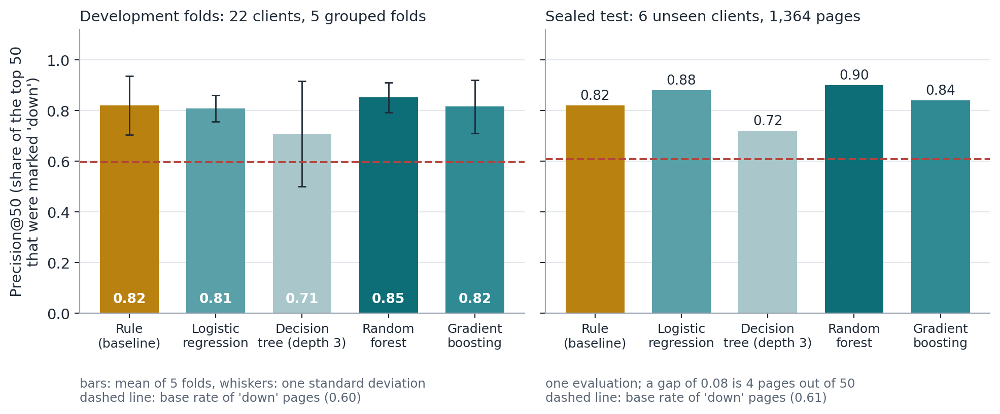
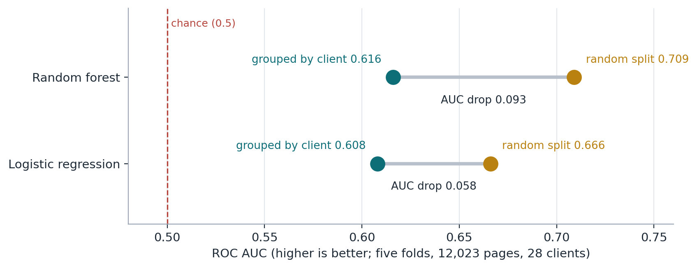
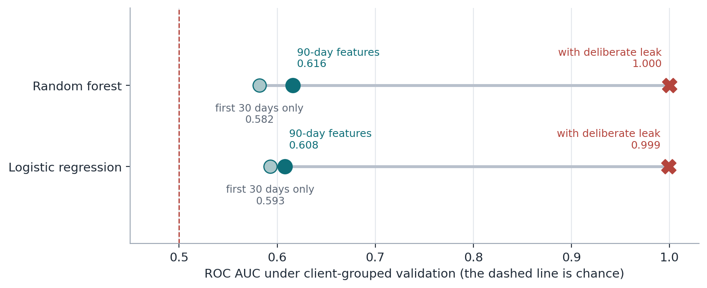

Abstract
When a content team can only review some of its pages, which ones should it open first? Using an anonymized slice of 12,023 pages from 28 clients (one 90-day snapshot), I built a transparent rule that ranks pages by how far their click-through rate falls below the typical rate for their search position, and compared it with four machine-learning models. Every comparison holds out whole clients, because a random split by page raised the Random Forest's AUC from 0.616 to 0.709 without any real gain. On development clients the rule's top 50 pages were marked "down" 82% of the time against a 60% base rate, and no model clearly beat it; on a small sealed set of six clients the models scored somewhat higher (AUC 0.66 to 0.68 vs. 0.58 for the rule). The results are observed associations with a proxy label, meant as decision-support for choosing which pages to review first, not as forecasts of decline or evidence that a rewrite would help.
Introduction
Picture a content reviewer with one afternoon and thousands of pages that get search impressions. They cannot open them all. The decision this work supports is simple: which page do I open first? A good answer sends the reviewer to pages where an action (rewriting a title and description, expanding the content, or leaving it alone) has a real chance of mattering.
The obvious starting point is click-through rate. A page that appears high in the results but earns few clicks may have a weak title or snippet. That is a hypothesis, so I tested it before building anything: does a low CTR for a page's position go together with a page losing impressions? Only after that did I turn it into a rule, and only then did I ask whether a machine-learning model improves on the rule.
The paper deliberately reports the rule, the models, and the checks that weakened my own first results, because the checks are what make the numbers usable.
Data
Source. A small anonymized slice of the FlyRank ML Internship dataset: 30,000 content pages from 32 clients, one row per page, with observed search and engagement metrics for a trailing 90-day window. Page and client identifiers are pseudonyms used only for grouping. The file has no client names, domains, URLs, page titles or search queries, and no product decision flags or scores.
Window. One snapshot of 90 days, with two comparison windows inside it (the last 30 days and the 30 days before). The file carries no calendar dates.
Analysis slice. I kept the 12,023 pages (from 28 clients) with at least 500 impressions, an average search position of 20 or better, and an age of at least 90 days. I excluded the rest for three reasons: pages with little demand have too few clicks for CTR to mean anything, pages ranked past position 20 are rarely a CTR problem, and a position of 0 in this data means "no data".
The label is a proxy. A page is marked "down" when its impressions in the last 30 days are more than 20% below the previous 30 days. This is a rule applied to the same snapshot, not an observed future outcome. In the slice, 59.9% of pages are marked "down". That base rate sits beside every score below.
Methodology
Signals checked before the rule
I checked two signals before writing any rule, and gave each a one-word verdict from a bucket table with its sample size.
- CTR against position: confirmed. Within position 4 to 10 (1,771 pages per quartile), the share marked "down" fell from 0.702 in the lowest-CTR quartile to 0.472 in the highest. Position 11 to 20 (about 1,115 pages per quartile) showed the same direction, 0.705 to 0.555. In position 1 to 3 there were only 120 pages per bucket, so I treat that band as weak support.
- Staleness: mixed. The 90 to 179 day band was slightly higher than the freshest (0.620 vs. 0.587), but the 30 to 89 day band was lower, and only 10 pages were older than 180 days. About 63% of pages had been updated within 30 days, so the data has little real staleness to learn from. Staleness has no weight in the rule.
The baseline rule
Each page gets a score equal to how far its CTR falls below the typical CTR for its position band (positions 1 to 3, 4 to 10, 11 to 20), as a share of that typical value, floored at zero. The typical value is the median CTR of pages in the same band, taken from training clients only when the rule is evaluated. Ties go to the page with more impressions. Output: a ranked queue with one reason code (low_ctr_for_position) and one action label (fix_title_and_snippet). Volume is a gate, not a weight, because I did not confirm that volume itself goes with decline. A first version that multiplied the CTR gap by impressions ("missed clicks") scored below the base rate, so I dropped it. Because I saw both results before choosing, the rule's numbers are slightly optimistic.
Models
Logistic regression, a depth-3 decision tree, a random forest and gradient boosting, with fixed settings and no tuning. They use 13 features: log impressions, average position, log CTR, content age, days since last update, days with impressions, log word count, log search volume, competition, cost per click, engagement rate, content type and search intent. Missing values get a median fill plus a "was missing" flag. A rule fixed in advance chose among models: the simplest one whose development AUC is within 0.005 of the best.
Validation
Whole clients are held out, never single pages, because pages from one client share a site, a topic mix and a tracking setup. About 20% of clients (6 clients, 1,364 pages) form a sealed test set evaluated once. The other 22 clients (10,659 pages) go through 5-fold grouped cross-validation, and the rule is recomputed on the same folds. I chose the sealed clients by a rule about design, not results: no single client may make up more than 40% of the sealed pages. Seeds 0 to 18 failed that rule (one client was most of the pages), so I used seed 19. I had seen results from the first, rejected split, and I say so. Metrics are precision@K (of the top K pages, the share marked "down") and ROC AUC.
Leakage checks
Label columns, the trend columns and the last-30 and previous-30-day columns are never features (checked in code). I planted one label-derived feature on purpose and watched the score. I tested a version that uses only features from the first 30 days, before the label window. And I looked at a feature that dominated the importance ranking, to see whether it was real signal or a side effect of how the label is built.
Results


| Method | Development folds (22 clients) | Sealed test (6 clients) | ||||
|---|---|---|---|---|---|---|
| AUC | P@20 | P@50 | AUC | P@20 | P@50 | |
| Rule (baseline) | 0.593 | 0.83 | 0.82 | 0.582 | 0.75 | 0.82 |
| Logistic regression | 0.605 | 0.80 | 0.81 | 0.673 | 0.90 | 0.88 |
| Decision tree (depth 3) | 0.582 | 0.77 | 0.71 | 0.574 | 0.85 | 0.72 |
| Random forest (chosen by the pre-set rule) | 0.611 | 0.90 | 0.85 | 0.661 | 0.95 | 0.90 |
| Gradient boosting | 0.600 | 0.86 | 0.82 | 0.677 | 0.85 | 0.84 |
| Base rate of "down" pages | 0.597 | 0.609 | ||||
Development figures are means over 5 grouped folds (fold-to-fold standard deviation of P@50: 0.05 to 0.21; one fold is a single large client). P@K is the share of the top K pages that were marked "down".
Read together, the tables say three things. The overall ordering of pages is only a little better than chance (AUC of about 0.6 for everything, rule included). The top of the list is much better than the base rate, and the simple rule gets most of that. And the learned models look better on the small sealed set than on the development folds, which is why I call the gain directional. A readable logistic regression scores as well as the random forest on the sealed clients (AUC 0.673 vs. 0.661), so complexity is not earning much here.


What the leakage checks found


One more check was on days_with_impressions, the feature the models lean on most. The share of pages marked "down" was 0.08 for pages with fewer than 30 active days (101 pages), 0.61 for 30 to 59 days (180 pages), 0.74 for 60 to 79 days (1,004 pages) and 0.59 for 80 days or more (10,738 pages). A page that only recently began earning impressions can look "up" by construction, and a page that fades late loses active days, so the feature is partly tied to how the label is built. I cannot separate real decline risk from that effect with this data.
What the errors look like
The highest-ranked pages that were not marked "down" were keyword articles with CTR between 0.00% and 0.15%, at positions between 2 and 17, with 596 to 2,032 impressions. A low CTR at positions 15 to 17 is common even for healthy pages, and a page at position 2 or 3 with zero clicks looks like a measurement gap. The declining pages the model scored lowest were large, with 88,000 to 149,000 impressions at positions 5 to 6 and ordinary CTR, so nothing in the static features warned of their drop. A label threshold also matters: a page that lost 19% counts as stable and one that lost 21% counts as "down".
Zero-click pages. About 10% of pages in the slice (1,215 of 12,023) show zero clicks in 90 days, and 9 of the rule's top 10 are among them. That may be a real title problem, but it may also be a tracking or indexing gap. A review queue that starts with these pages is partly a data-quality list.
Limitations and honest framing
These are the words I allow myself: observed for what the data shows, measured for a number with its comparison, directional for a gap too small to be sure of, and decision-support for a tool that sets review order. The work does not claim any of the following.
- No causal claim. The data is a single observational snapshot. Nothing here shows that rewriting a title or refreshing a page would reverse a decline, and nothing says anything about how Google ranks pages.
- The label is a proxy. "Down" is a threshold on the last 30 days against the 30 before, inside the same 90-day window as most features. It is not a forecast of future decline.
- No time-aware split. The file has no dates, so I could not train on the past and test on the future, which is the split that matches real use.
- The overlap effect is not isolated. The first-30-day test removed the overlap and three features together.
- Uneven and small test sets. There are 28 clients of very different sizes; one client alone fills a whole development fold, and the sealed test is 6 clients and 1,364 pages. I chose the sealed split by a balance rule after seeing a rejected first split.
- Some picks may be measurement problems. The zero-click pages above are a reminder that a metric gap can look like a content problem.
- A small slice. This is an anonymized starter slice, not the full warehouse. The numbers may not carry over to other clients, months or sites.
- Untuned models. I fixed model settings in advance to avoid fitting the folds, so a tuned model might do better or worse.
Ranked recommendations
An action playbook for a content team, in the order I would do things. Each is decision-support, not a promise of results.
Check measurement before rewriting anything
- Why
- About 10% of pages with 500 or more impressions show exactly zero clicks, including most of the top of my queue.
- How
- List pages with many impressions and zero clicks. Check tracking, indexing and search-result features before touching copy.
- Measure
- The share still at zero clicks after the check.
Review pages whose CTR is far below the norm for their position
- Why
- In the signal check, the lowest-CTR quartile was marked "down" more often (0.70 vs. 0.47 in positions 4 to 10), and the rule's top 50 were marked "down" about 82% of the time.
- How
- Start with the highest-impression pages in the queue. Rewrite the title and description, and check the snippet.
- Measure
- CTR and impressions at 30 and 60 days, against similar pages that were not reviewed.
Use a model as a second opinion within that list, not as a replacement
- Why
- Models matched the rule on development clients and looked better only on six sealed clients (AUC 0.66 to 0.68 vs. 0.58).
- How
- Use a readable logistic regression to reorder pages inside the queue. Keep the rule as the explanation.
- Measure
- Precision@50 on a later period, on clients not used for fitting.
Treat pages that only recently began earning impressions separately
- Why
- Pages with few active days behave differently, and the effect is partly built into how "down" is defined.
- How
- Keep them out of the main queue, or review them on their own list.
- Measure
- Whether they stay in the queue after a full window of data.
Do not rank by staleness alone in this data
- Why
- The staleness signal was mixed and most pages were updated recently, so there was not enough contrast to learn from.
- How
- Revisit it where pages have a wider spread of update dates.
- Measure
- Decline rate by days since update with at least 100 pages per bucket.
Build the measurement that would turn this into evidence
- Why
- The proxy label and the missing dates limit what this study can say.
- How
- Use dated data, define the label on a future window, and keep a comparison group of unreviewed pages.
- Measure
- Precision@K against a baseline on a time-ordered split.
Reproducibility
Every number above comes from a notebook in the project repository, which also holds the aggregate metrics files for the baseline, the model comparison and the audit. The notebooks run in Google Colab from the repository and use fixed seeds.
- Project repository
- Research question and lane choice
- Task framing and target
- Data contract and leakage trap
- Signal checks and the baseline rule
- Model against baseline, grouped validation
- Validation and leakage audit, claim rewrite
Settings: seed 0 throughout; sealed-split seed 19 chosen by the balance rule above; random forest with 300 trees and a minimum leaf of 20; scikit-learn 1.8.0. Models use fixed settings and were not tuned. The anonymized starter slice used here ships with the repository; the figures and tables on this page are aggregates only.
Acknowledgments and data credit
Built on the FlyRank ML Internship dataset. Thanks to the FlyRank team for the data and the program. The audit approach was inspired by the careful reading of FlyRank's own March 2026 research paper, The State of AI-Driven SEO, which labels its observational and exploratory pieces clearly.